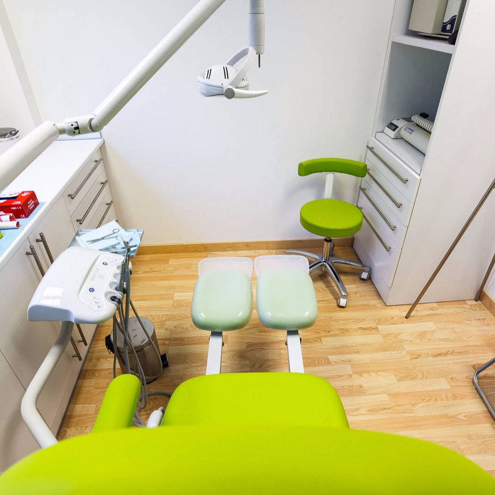
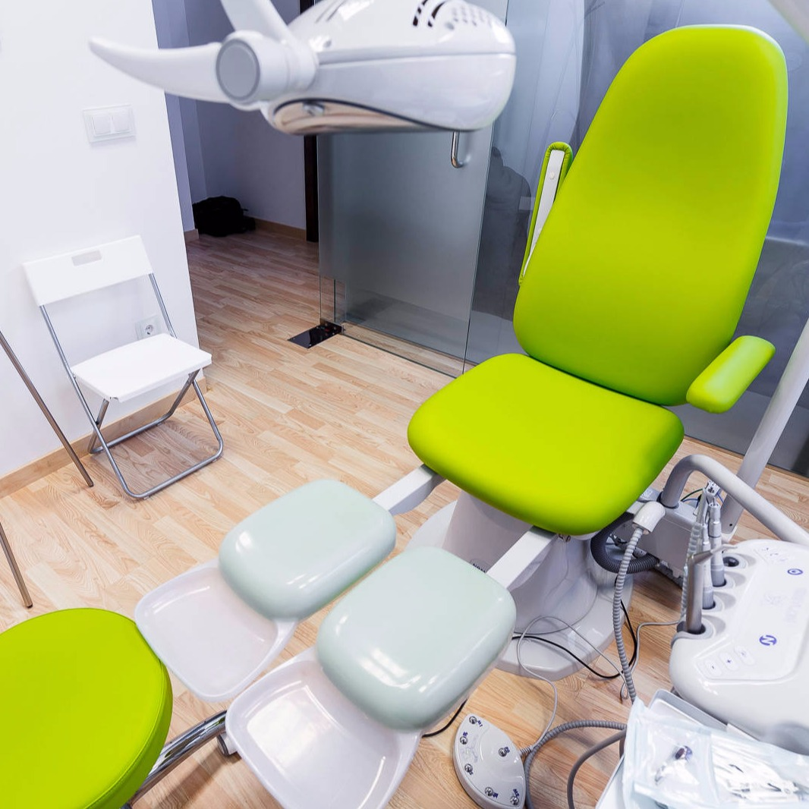
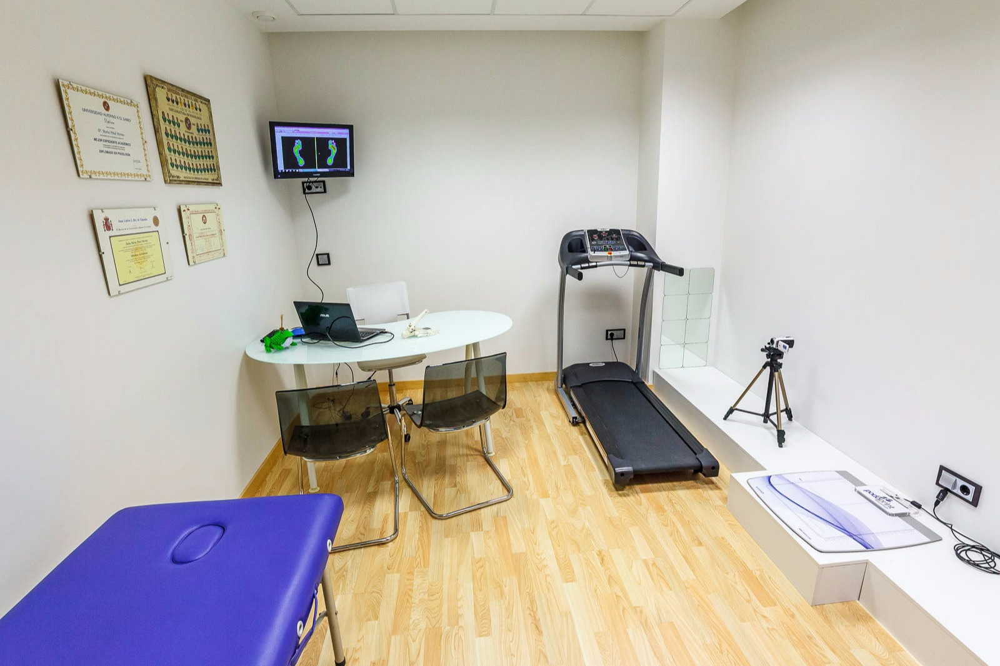
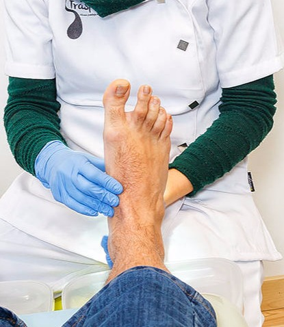
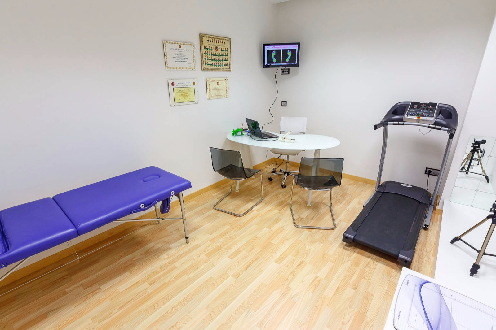
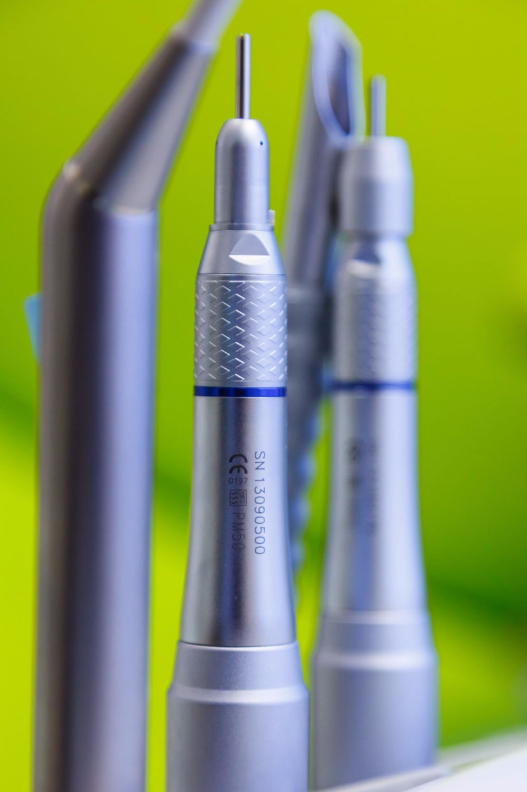

Espacios equipados con tecnología de última generación para ofrecer el mejor diagnóstico y tratamiento podológico.
La clínica cuenta con salas independientes para consulta general y estudio biomecánico de la pisada, garantizando la máxima comodidad y privacidad.

Sala de consulta
Sala de consulta
Sala de estudio de la pisada
Atención personalizada
Estudio de la pisada
En Clínica Podológica Traspiés contamos con equipamiento de última generación para ofrecer diagnósticos precisos y tratamientos efectivos.
Estaremos encantados de recibirte en nuestra clínica en Calahorra y valorar tu caso de forma personalizada.